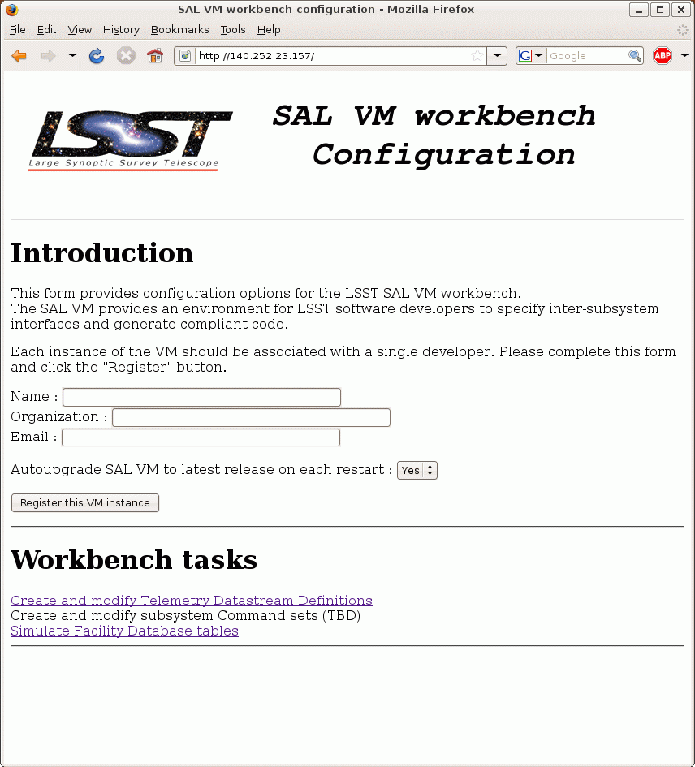
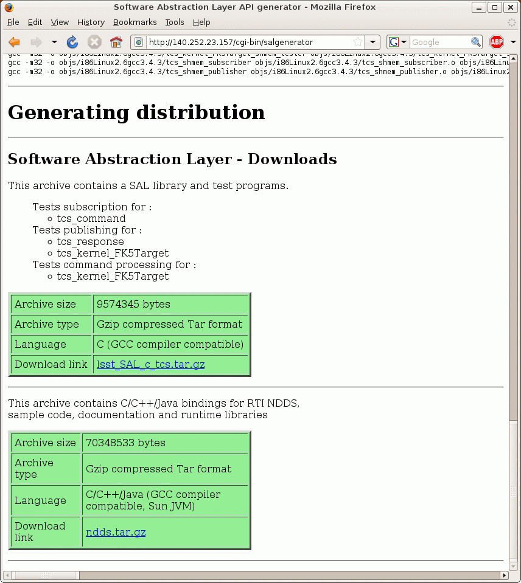
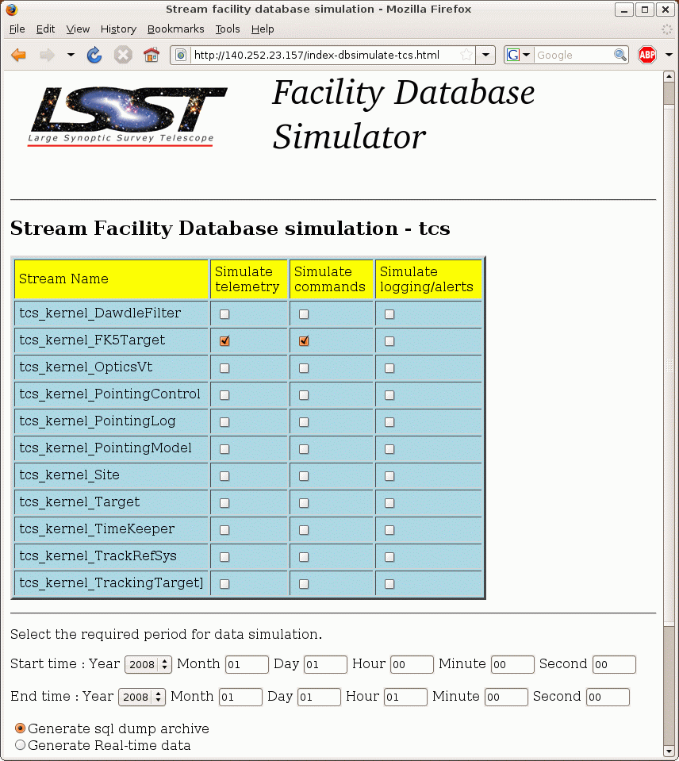

1.0 SCOPE
An additional "Service Abstraction Layer" will provide application developers with a simplified interface to the DDS facilities. It also facilitates the logging of all subsystem telemetry and command history. to the Engineering and Facility Database (EFD).
Tools are used to automatically generate communications code from Telemetry and Command definitions, which are described using "Interface definition Language".
A System Dictionary describes the syntax and naming schemes used in the IDL, thus establishing system-wide consistency.
The required network bandwidth for each subsystem , and the accompanying EFD table sizes are described.
The detailed descriptions of all the Telemetry streams and commands, are listed in per-subsystem appendices.
BEE - Back-End Electronic
CALSYS - Camera Calibration System
CCS - Camera Control System
DDS - Data Distribution Service
EA - Enterprise Architect
EFD - Engineering and Facility Database
FCS - Filter Controller Subsystem
FEE - Front End Electronics
FPA - Focal Plane Array Actuation
GAS - Guider data acquisition system
GS - Guider system
IDL - Interface Definition Language
L2U - L2 Controller Unit
LASERCAL - Camera metrology calibration System
LSST - Large Synoptic Survey Telescope
ODBC - Open Database Connectivity
OMG - Object Management Group
PWR - Camera Power supply System
QA - Camera Quality Assurance measurements
QoS - Quality of Service
RAS - Raft Alignment Subsystem
RTI - Real Time Innovation
RTPS - Real Time Publish Subscribe
SAL - Service Abstraction Layer
SAS - Science Array System
sbt - Simple Build Tool
SCU - Shutter Controller Unit
SDS - Science Data Acquisition System
SQL - Standard Query Language
TC - Thermal Control
TCM - Camera Timing control
unixODBC - Open Database Connectivity for unix
VCS - Vacuum Control Subsystem
WDS - Wavefront data acquisition system
WFS - Wave-front Sensing System
WTCM - Camera wavefront sensors Timing control
XML - eXtensible Markup Language
Datastream Definitions Document - Datastream Prototypes 1.7 (Document-11528)
Definition of subsystems - LSST Project WBS Dictionary (Document-985)
Documentation standards - LSST DM UML Modeling Conventions (Document-469)
Messaging standards - OMG DDS 1.1 (Document-2233)
Security policies - http://dev.lsstcorp.org/trac/attachment/wiki/Security/Security Policy documents.zip
Software Abstraction Layer API - Middleware Software Abstraction Layer (Document-3692)
Software coding standards LSST C++ Programming Style Guidelines (Document-3046)
Vendor documentation - Opensplice manuals (Collection-2791)
The combination of Client-Server and Publish-Subscribe models leads to the concept of Command/Action/Response model, in that the transmission of commands is decoupled from the action that executes that command. A command will return immediately; the action begins in a separate thread. Figure 3 illustrate this model by means of a simplified sequence diagram. When an application receives a command, it validates the attributes associated with that command and immediately accepts or rejects the command. If the command is accepted, the application then initiates an independent internal action to meet the conditions imposed by the command. Once those conditions have been met, an event is posted signifying the successful completion of the action (or the unsuccessful completion if the condition not be met). In this figure, callbacks are implemented using the event features of the publish-subscribe model.
Information flows with the aid of the following constructs : Publisher and DataWriter on the sending side, Subscriber, and DataReader on the receiving side.
A Publisher is an object responsible for data distribution. It may publish data of different data types. A DataWriter acts as a typed4 accessor to a publisher. The DataWriter is the object the application must use to communicate to a publisher the existence and value of data-objects of a given type. When data-object values have been communicated to the publisher through the appropriate data-writer, it is the publisher's responsibility to perform the distribution (the publisher will do this according to its own QoS, or the QoS attached to the corresponding data-writer). A publication is defined by the association of a data-writer to a publisher. This association expresses the intent of the application to publish the data described by the data-writer in the context provided by the publisher.
A Subscriber is an object responsible for receiving published data and making it available (according to the Subscribers QoS) to the receiving application. It may receive and dispatch data of different specified types. To access the received data, the application must use a typed DataReader attached to the subscriber. Thus, a subscription is defined by the association of a data-reader with a subscriber. This association expresses the intent of the application to subscribe to the data described by the data-reader in the context provided by the subscriber.
Topic objects conceptually fit between publications and subscriptions. Publications must be known in such a way that subscriptions can refer to them unambiguously. A Topic is meant to fulfill that purpose: it associates a name (unique in the domain), a data-type, and QoS related to the data itself. In addition to the topic QoS, the QoS of the DataWriter associated with that Topic and the QoS of the Publisher associated to the DataWriter control the behavior on the publisher's side, while the corresponding Topic, DataReader, and Subscriber QoS control the behavior on the subscribers side.
When an application wishes to publish data of a given type, it must create a Publisher (or reuse an already created one) and a DataWriter with all the characteristics of the desired publication. Similarly, when an application wishes to receive data, it must create a Subscriber (or reuse an already created one) and a DataReader to define the subscription.
QoS (Quality of Service) is a general concept that is used to specify the behavior of a service. Programming service behavior by means of QoS settings offers the advantage that the application developer only indicates what is wanted rather than how this QoS should be achieved. Generally speaking, QoS is comprised of several QoS policies. Each QoS policy is then an independent description that associates a name with a value. Describing QoS by means of a list of independent QoS policies gives rise to more flexibility.
This specification is designed to allow a clear separation between the publish and the subscribe sides, so that an application process that only participates as a publisher can embed just what strictly relates to publication. Similarly, an application process that participates only as a subscriber can embed only what strictly relates to subscription.
Underlying any data-centric publish subscribe system is a data model. This model defines the global data space and specifies how Publishers and Subscribers refer to portions of this space. The data-model can be as simple as a set of unrelated data structures, each identified by a topic and a type. The topic provides an identifier that uniquely identifies some data items within the global data space. The type provides structural information needed to tell the middleware how to manipulate the data and also allows the middleware to provide a level of type safety. However, the target applications often require a higher-level data model that allows expression of aggregation and coherence relationships among data elements.
The OCS Middleware provides multiple levels of access to the functionality provided. It is recommended that the highest level methods be utilized whenever possible.
The access levels are :
Transparent access to telemetry and command objects residing on any
subsystem is provided via means of automatic shared memory mapping of the
underlying data objects.
The lower level objects are managed using an implementation
of the OMG's DDS.
The currently selected implementation is OpenSplice DDS, but the existence of the SAL permits flexibility in migrating to other DDS solutions if required.
The SAL provides direct access to only a small subset of the total functionality
provided by the DDS, reducing both the amount of code required, and it's
complexity, as seen by the application programmer.
The OMG DDS standard is an evolving entity. It is expected that the prototype SIMD/jSIMD API's referenced below, will be replaced by agreed OMG standards of equivalent functionality.
The SAL framework is designed to make this, and other similar transitions, transparent to the application level developers.
See the Example generated classes for details.
The SAL will provide per-subsystem and per-datastreams specific objects to facilitate application level access to all published telemetry.
The SAL will provide automatic version and temporal consistency checking and appropriate feedback to the application level code.
See the Example generated classes for details.
The SAL will provide per-subsystem and per-datastreams specific objects to facilitate application level access to all published telemetry.
The SAL will provide automatic version and temporal consistency checking and appropriate feedback to the application level code.
The interface is initialized by loading a shared library into
a standard "wish" command shell.
The following command are to be available for scripting
or interactive use
readshm --TOPICID--
Reads the current values for the topic from the shared
memory area. Tcl variables with names of the form
SHM--TOPICID--(itename) are populated wit the values.
writeshm --TOPICID--
Publishes the current values for the topic from Tcl variables
to the appropriate shared memory area.
sendcmd --SUBSYSTEM-- args...
Send a command to the named subsystem. Responses can be received by using the command readshm --SUBSSYTEM--_response
sendack --SUBSYSTEM-- args...
Send a command response for the named subsystem.
logevent --SUBSYSTEM-- args...
Log an alert/warning/message for the named subsystem.
The SAL will provide automatic version and temporal consistency checking and appropriate feedback to the application level code.
Invocation with no arguments will result in display of the on-line help.
SAL generator tool - Usage :
salgenerator match*.idl flag(s)
where flag(s) may be
validate - check the IDL and Command/LogEvent definitions
simd - generate SIMD c++ code
sal - generate SAL wrappers for cpp, java, isocpp, python
compile - compile a c++ module
java - generate JNI interface
tcl - generate tcl interface
html - generate web form interfaces
labview - generate Labview low-level interface
db - generate telemetry database table
Arguments required are
db start-time end-time interval
where the times are formatted like "2008-11-12 16:20:01"
and the interval is in seconds
shmem - generate shared memory interface
sim - generate simulation configuration
icd - generate ICD document
link - link a SAL program
verbose - be more verbose ;-)
The initial page look like this

Once the user has registered the VM instance, then data
definition tasks can be started. review the instructions

then click on the "Datastream Definition Editor".
The editor page is prepopulated with the default set of
datastream definitions. For each datastream there are
3 choices of activity.

To edit the definition, choose the "Edit contents" option.
For example, selecting tcs_kernel_Target would open to a page like this

Here , items can be added, modified, or deleted. Remember to click
update (bottom of the page) once all required changes have been
made.
Once the data definitions have been created the SAL VM will
generate the corresponding IDL file for input into the
code generation tools.
In the event that a pre-existing IDL file has been generated
then this can also be passed to the SAL VM and syntax checked
prior to use.
Sample IDL file defining default Camera datastreams.
For example, selecting the tcs.kernel.Target "setup" option
leads to a page like this


In this example , the user has selected to generate code for
the tcs.kernel.FK5Target item, opting to both publish telemetry
and process incoming commands.
The generated code will be C/C++ and include support for the
OpenSplice DDS low-level software.
The code generation process logs it's progress to the browser window,
and upon successful completion it builds archives containing the
generated code, and presents a set of links for downloading them.

The SAL SDK User Guide contains a comprehensive of the generated files and their contents.
Simulation setup is performed using a form where each datastream
or commanding participant in a subsystem can be allocated to
a different computer.

Once the simulation definition has been completed, the VM builds
all the appropriate libraries and test executables. A simulation
deployment script is created. This script is designed to be run
from the SAL VM, either by logging in to an ssh terminal session,
or by connecting to the built-in VNC desktop. For example

shows the VNC desktop with an xterm listing the launcher script
for a tcs subsystem simulation.
The simulation capabilities also include database creation.
For each of the defined datastreams and command/response
streams, the user can select a start and end epoch for the
simulation, and whether real-time , or a dump to file is
preferred.
The following example would create an SQL dump file for the
tcs_kernel_FK5Target datastream, for a 1 hour period.

The resulting dump is subsequently presented for download

The goal of the DDS specification is to facilitate the efficient distribution of data in a distributed system. Participants using DDS can read and write data efficiently and naturally with a typed interface. Underneath, the DDS middleware will distribute the data so that each reading participant can access the most-current values. In effect, the service creates a global data space that any participant can read and write. It also creates a name space to allow participants to find and share objects.
DDS targets real-time systems; the API and QoS are chosen to balance predictable behavior and implementation efficiency/performance.
By leveraging the Apache Camel integration framework and its support for over 80 connectors, the OpenSplice Gateway is the best choice for integrating DDS-interoperable applications with proprietary as well as standards-based messaging technologies, such as JMS and AMQP, as well as user applications leveraging Web standards such as W3C Web Services, REST and HTML5 WebSockets.
It's potential use is still being evaluated.
The Java based OpenSplice Tuner tool aids the design, implementation, test and maintenance of OpenSplice based distributed systems (the OpenSplice Tuner is available both as a 'standalone' Java-program as well as an Eclipse plug-in for the Productivity tool suite).
The OpenSplice Tuner's features target all lifecycle stages of distributed system development and can be summarized as:
The main features of the OpenSplice Tester are:
Its main characteristics are:
This DBE is freely available from the Real-Time DDS Examination & Evaluation Project (RT-DEEP)
The Real-Time Publish Subscribe (RTPS) protocol has its roots in industrial automation and was approved by the IEC as part of the Real-Time Industrial Ethernet Suite IEC-PAS-62030. It is a field proven technology that is currently deployed worldwide in thousands of industrial devices. RTPS was specifically developed to support the unique requirements of data-distributions systems.
As one of the application domains targeted by DDS, the industrial automation community defined requirements for a standard publish subscribe wire-protocol that closely match those of DDS. There is a close synergy between DDS and the RTPS wire-protocol, both in terms of the underlying behavioral architecture and the features of RTPS.
The RTPS protocol is designed to be able to run over multicast and connectionless best-effort transports such as UDP/IP. The main features of the RTPS protocol include:
The above features make RTPS an excellent match for a DDS wire-protocol. Given its publish subscribe roots, this is not a coincidence, as RTPS was specifically designed for meeting the types of requirements set forth by the DDS application domain.
This specification defines the message formats, interpretation, and usage scenarios that underlie all messages exchanged by applications that use the RTPS protocol.
See the RTPS Specification Document for details.
This type of packet filtering pays no attention to whether a packet is part of an existing stream of traffic (it stores no information on connection state). Instead, it filters each packet based only on information contained in the packet itself (most commonly using a combination of the packet's source and destination address, its protocol, and, for TCP and UDP traffic, which comprises most internet communication, the port number).
Because TCP and UDP traffic by convention uses well known ports for particular types of traffic, a stateless packet filter can distinguish between, and thus control, those types of traffic (such as web browsing, remote printing, email transmission, file transfer), unless the machines on each side of the packet filter are both using the same non-standard ports. Second Generation firewalls do not simply examine the contents of each packet on an individual basis without regard to their placement within the packet series as their predecessors had done, rather they compare some key parts of the trusted database packets. This technology is generally referred to as a 'stateful firewall' as it maintains records of all connections passing through the firewall, and is able to determine whether a packet is the start of a new connection, or part of an existing connection. Though there is still a set of static rules in such a firewall, the state of a connection can in itself be one of the criteria which trigger specific rules.
This type of firewall can help prevent attacks which exploit existing connections, or certain Denial-of-service attacks, including the SYN flood which sends improper sequences of packets to consume resources on systems behind a firewall.
All Data Writers and Data Readers with like data types will communicate within this domain. DDS also has the capability to support multiple domains, thus providing developers a system that can scale with system needs or segregate based on different data types. When a specific data instance is published on one domain, it will not be received by subscribers residing on any other domains.
Multiple domains provide effective data isolation. One use case would be for a system to be designed whereby all Command/Control related data is exchanged via one domain while Status information is exchanged within another. Multiple domains are also a good way to control the introduction of new functionality into an existing system.
Functional commands : commands that implement the specific functional characteristics of a subsystem components.
Functional operation is based on the Command/Action/Response model that isolates the transmission of the command from the resulting action that is performed. When an application receives a command, it validates any Configuration associated with that command and immediately accepts or rejects the command. If the command is accepted, the application then initiates an independent internal action to meet the conditions imposed by the command. Once those conditions have been met, an event is posted signifying the successful completion of the action (or the unsuccessful completion if the conditions can not be met).
Commands return immediately but the actions that are initiated as a result of a command may take some time to complete. When the action completes, an action status event is posted that includes the completion status of that action. The subsystem generating the command monitors this status event prior to issuing the command on the remote system. While the monitoring is performed automatically by the command system, Subsystem developers may need to attach a callback to perform processing on action completion. This callback may be null if no processing is needed.
If a command is accepted by the subsystem it causes an independent action to begin. A response to the command is returned immediately. The action begins matching the current configuration to the new demand configuration. When the configurations match (i.e., the subsystem has performed the input operations) the action signals the successful end of the action. If the configurations cannot be matched (whether by hardware failure, external stop command, timeout, or some other fault) the action signals the unsuccessful end of the action.
The important features of the command/action/response model are:
| Command | Description |
| start | Prepare the subsystem to accept functional commands |
| stop | Stop execution of a command |
| online | Set subsystem ready for commands |
| abort | Take subsystem offline (must be brought back online before any other commanding is possible) |
| Identifier | Description |
| private_revCode | crc of IDL source |
| private_sndStamp | system time of sender |
| private_rcvStamp | system time of receiver |
| private_seqNum | sequence number (process) |
| private_origin | IP subaddr and PID |
The topic is used to identify publishers to subscribers. The severity may be used as a filter by notification subscribers.
The notification service has the following general properties: An notification topic represents a many to many mapping: notifications may be posted to the topic from more than one source and received by zero or more targets. (Typically, however, most topics will have a single source.)
Notifications posted by a single source into an notification topic are received by all targets in the same order as they were posted.
Delivery of notifications to one subscriber cannot be blocked by the actions of another subscriber. An notification stream is an abstract concept: a subscriber may subscribe to an notification stream using a wildcarded name in which case the notifications it receives are the merging of all published notifications whose names match that wildcarded name.
Notification are not queued by the service. A late subscriber will not see earlier notifications.
The service does not drop notifications. A published notification will be delivered to all subscribers.
The notification service supports arbitrary notification topics.
Notifications are automatically tagged with the source and a timestamp.
DataWriter/DataReader discovery

Discovery is implemented using DDS entities known as Built-in Data Writers and Built-in Data Readers
Three Built-in topics (keyed):
A Topic is comprised of a Topic Name and a Topic Type. The Topic Name is a string that uniquely identifies the Topic within a domain. The Topic Type is the definition of the data contained within the Topic. Topics must be uniquely defined within any one particular domain. Two Topics with different Topic Names but the same Topic Type definition would be considered two different Topics within the DDS infrastructure.
The database is used to automatically generate application level code to perform all command level interactions. This code is thus guaranteed to be consistent system wide. See Appendix C
The database is used to automatically generate application level code to perform all datastream topic references. This code is thus guaranteed to be consistent system wide. See Appendix B
Events are generated using the same database, and comprise a special category of topics which may assigned the highest priority (ALERT category) if appropriate.
The permissible commands, datastream contents, and issuable alerts are all defined by the controls system database and their nomenclature is controlled by the system dictionary. All intersubsystem messages formats are autogenerated. Low level data transfers include versioning checksums based on the source level record definition.